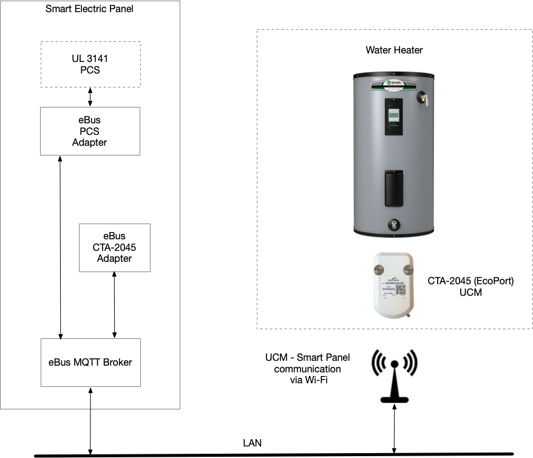

CTA-2045 Adapter
Control water heaters and flexible-demand appliances through their CTA-2045 (EcoPort) interfaces.
Overview
The CTA-2045 standard defines a communication interface for demand-response capable appliances. Many water heaters, HVAC systems, and pool pumps include a CTA-2045 "EcoPort" that allows external systems to control their operation for load shifting and demand response.
The eBus CTA-2045 adapter bridges these appliances to the eBus ecosystem, translating CTA-2045 binary messages into eBus/Homie MQTT topics. This enables any eBus device or HEMS to monitor and control CTA-2045 appliances.
Architecture

eBus CTA-2045 adapter architecture showing integration with water heater via UCM
How It Works
- Physical Connection: A SkyCentrics Universal Communication Module (UCM) plugs into the water heater's CTA-2045 EcoPort connector.
- Network Transport: The UCM connects to the home LAN via Wi-Fi and establishes a connection to the eBus MQTT broker. CTA-2045 binary messages are transported/tunneled over MQTT.
- Protocol Translation: The eBus CTA-2045 adapter subscribes to the UCM's MQTT topics, decodes the binary CTA-2045 messages, and republishes them as structured data following the eBus/Homie Convention.
- Control: An eBus HEMS or other rider can read the water heater's status and mode via MQTT, and send shed, load-up, or other commands by publishing to the appropriate command topics.
Supported Commands
The CTA-2045 standard defines several demand-response commands:
- Shed: Reduce or stop energy consumption immediately
- End Shed: Return to normal operation
- Load Up: Increase energy consumption (e.g., heat water now while energy is cheap/available)
- Critical Peak: Signal critical peak pricing period
- Grid Emergency: Signal grid emergency condition
Note: The UCM handles the physical CTA-2045 protocol. The eBus adapter focuses on translating between the UCM's MQTT representation and the eBus/Homie convention, making the water heater accessible to all eBus riders.
Benefits
- No polling required - status updates are pushed via MQTT pub/sub
- Any eBus device can access water heater data without redundant integration
- Enables sophisticated energy management (e.g., heat water during solar production)
- Works locally without cloud connectivity
- Standard Homie schema makes the device self-describing
Hardware Requirements
- CTA-2045 compatible appliance (water heater, pool pump, HVAC, etc.)
- SkyCentrics UCM or compatible CTA-2045 network bridge
- eBus MQTT broker (can run on any Linux device on the LAN)